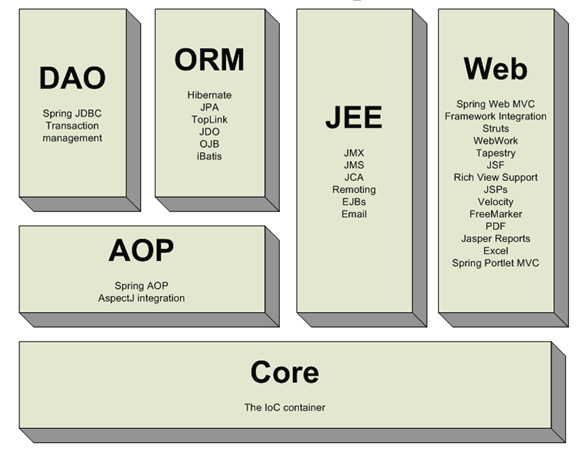
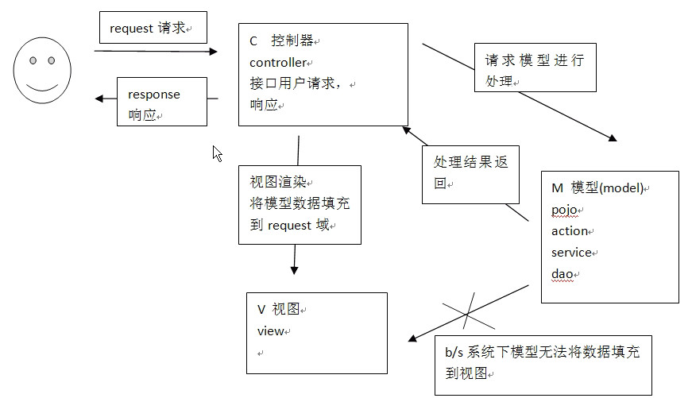
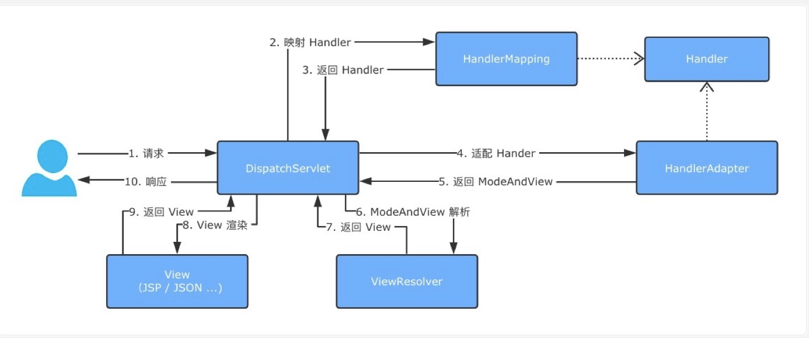
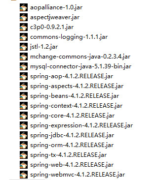
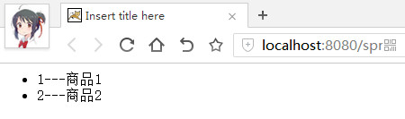

Spring Web MVC概述
Spring为Web层(struts之类的)提供了自己的解决方案，即Spring Web MVC
它是一种基于Java的实现了Web MVC设计模式的请求驱动类型的轻量级Web框架，即使用了MVC架构模式的思想，将web层进行职责解耦，基于请求驱动指的就是使用请求-响应模型，框架的目的就是帮助我们简化开发，Spring Web MVC也是要简化我们日常Web开发的

B/S系统中MVC架构
在Web MVC模式下，模型无法主动推数据给视图，如果用户想要视图更新，需要再发送一次请求（即请求-响应模型）

Spring Web MVC核心架构

Spring’s web MVC framework is, like many other web MVC frameworks, request-driven, designed around a central Servlet that dispatches requests to controllers and offers other functionality that facilitates the development of web applications. Spring’s DispatcherServlet however, does more than just that. It is completely integrated with the Spring IoC container and as such allows you to use every other feature that Spring has
Spring Web MVC的执行流程
-
首先用户发送请求——>DispatcherServlet，前端控制器收到请求后自己不进行处理，而是委托给其他的解析器进行处理，作为统一访问点，进行全局的流程控制
-
DispatcherServlet——>HandlerMapping，HandlerMapping将会把请求映射为HandlerExecutionChain对象（包含一个Handler处理器（页面控制器）对象、多个HandlerInterceptor拦截器）对象，通过这种策略模式，很容易添加新的映射策略
-
DispatcherServlet——>HandlerAdapter，HandlerAdapter将会把处理器包装为适配器，从而支持多种类型的处理器，即适配器设计模式的应用，从而很容易支持很多类型的处理器
-
HandlerAdapter——>处理器功能处理方法的调用，HandlerAdapter将会根据适配的结果调用真正的处理器的功能处理方法，完成功能处理；并返回一个ModelAndView对象（包含模型数据、逻辑视图名）
-
ModelAndView的逻辑视图名——> ViewResolver， ViewResolver将把逻辑视图名解析为具体的View，通过这种策略模式，很容易更换其他视图技术
-
View——>渲染，View会根据传进来的Model模型数据进行渲染，此处的Model实际是一个Map数据结构，因此很容易支持其他视图技术；
-
返回控制权给DispatcherServlet，由DispatcherServlet返回响应给用户，到此一个流程结束
基本代码编写
原理
-
前端控制器DispatcherServlet，由于接受请求，响应结果，相当于转发器,减少了其他组件间的耦合性（不需要程序员开发）
-
处理器映射器HandlerMapping，根据URL查找Handler（不需要程序员开发）
-
处理器Handler，要按照HandlerAdapter的规则去编写，这样适配器才能正确执行Handler（需要程序员开发）
-
处理器适配器HandlerAdapter，按照特定的规则去执行Handler（不需要程序员开发）
-
视图解析器ViewResolver，进行视图解析，根据逻辑视图名解析成真正的视图（View）（不需要程序员开发）
-
视图View，View是一个接口，支持类实现不同的View类型(jsp,freemarker,pdf…)（需要写相关view的界面代码）
根据上面的介绍，及运行流程很容易就能够写出一个简单的Demo
导入相关jar包

配置DispatcherServlet
在web.xml中配置前端控制器DispatcherServlet
<!-- springMVC前端控制器 -->
<servlet>
<servlet-name>DispatcherServlet</servlet-name>
<servlet-class>org.springframework.web.servlet.DispatcherServlet</servlet-class>
<!-- 配置要加载的配置文件 -->
<init-param>
<param-name>contextConfigLocation</param-name>
<param-value>classpath:spring-mvc.xml</param-value>
</init-param>
</servlet>
<servlet-mapping>
<servlet-name>DispatcherServlet</servlet-name>
<!--
*.action，访问以*.action的由DispatcherServlet解析
/ ，所有地址都由DispatcherServlet解析，对于静态文件的解析需要再做处理
/* ，这样配置不对，当转发到一个jsp页面时仍会再次解析，不能根据jsp页面找到handler会报错
-->
<url-pattern>/</url-pattern>
</servlet-mapping>
配置HandlerMapping
再web.xml文件中配置DispatcherServlet时给定了springmvc配置文件的路径
<?xml version="1.0" encoding="UTF-8"?>
<beans xmlns="http://www.springframework.org/schema/beans"
xmlns:xsi="http://www.w3.org/2001/XMLSchema-instance" xmlns:aop="http://www.springframework.org/schema/aop"
xmlns:tx="http://www.springframework.org/schema/tx" xmlns:context="http://www.springframework.org/schema/context"
xmlns:mvc="http://www.springframework.org/schema/mvc" xmlns:task="http://www.springframework.org/schema/task"
xsi:schemaLocation="
http://www.springframework.org/schema/beans
http://www.springframework.org/schema/beans/spring-beans.xsd
http://www.springframework.org/schema/tx
http://www.springframework.org/schema/tx/spring-tx.xsd
http://www.springframework.org/schema/aop
http://www.springframework.org/schema/aop/spring-aop.xsd
http://www.springframework.org/schema/context
http://www.springframework.org/schema/context/spring-context.xsd
http://www.springframework.org/schema/mvc
http://www.springframework.org/schema/mvc/spring-mvc.xsd
http://www.springframework.org/schema/task
http://www.springframework.org/schema/task/spring-task.xsd">
<!--处理器映射器 -->
<!-- BeanNameUrlHandlerMapping能够将浏览器的url与配置的handler的name进行映射 -->
<bean class="org.springframework.web.servlet.handler.BeanNameUrlHandlerMapping"></bean>
</beans>
配置HandlerAdapter
<!--处理器适配器 -->
<!--一个实现HandlerAdapter接口的类，能够处理实现Controller接口的handler -->
<bean class="org.springframework.web.servlet.mvc.SimpleControllerHandlerAdapter"></bean>
配置ViewResolver
<!--视图解析器 -->
<!-- 支持jsp，默认使用jstl标签 -->
<bean class="org.springframework.web.servlet.view.InternalResourceViewResolver"></bean>
开发Handler
由于采用了SimpleControllerHandlerAdapter
public class SimpleControllerHandlerAdapter implements HandlerAdapter {
@Override
public boolean supports(Object handler) {
//说明此适配器能够处理Controller接口的Handler
return (handler instanceof Controller);
}
....
}
所以编写的Handler要符合SimpleControllerHandlerAdapter的规范，即实现Controller接口
public class ItemController implements Controller{
@Override
public ModelAndView handleRequest(HttpServletRequest request, HttpServletResponse response) throws Exception {
//调用service查找数据库,这里用静态数据模拟
List<Item> list = new ArrayList<>();
list.add(new Item(1, "商品1"));
list.add(new Item(2, "商品2"));
//创建ModelAndView
ModelAndView modelAndView = new ModelAndView();
//相当于request的setAttribute
modelAndView.addObject("list", list);
//指定视图
modelAndView.setViewName("/WEB-INF/jsp/itemList.jsp");
return modelAndView;
}
}
配置Handler的访问路径
<!-- handler BeanNameUrlHandlerMapping-->
<bean name="/listItem" class="controller.ItemController"></bean>
页面编写
再Handler中指定了路径modelAndView.setViewName("/WEB-INF/jsp/itemList.jsp")，所以在这个路径下编写ViewResolver所支持的界面，这里的是jsp页面，并且使用了jstl标签库
<%@ page language="java" contentType="text/html; charset=UTF-8"
pageEncoding="UTF-8"%>
<%@ taglib prefix="c" uri="http://java.sun.com/jsp/jstl/core"%>
<!DOCTYPE>
<html>
<head>
<meta http-equiv="Content-Type" content="text/html; charset=UTF-8">
<title>Insert title here</title>
</head>
<body>
<ul>
<c:forEach items="${list}" var="item">
<li>${item.id}---${item.name}</li>
</c:forEach>
</ul>
</body>
</html>
测试
启动项目时报错，发现是缺少commons-logging包，导入即可
访问http://localhost:8080/springmvc/listItem得到结果页面
